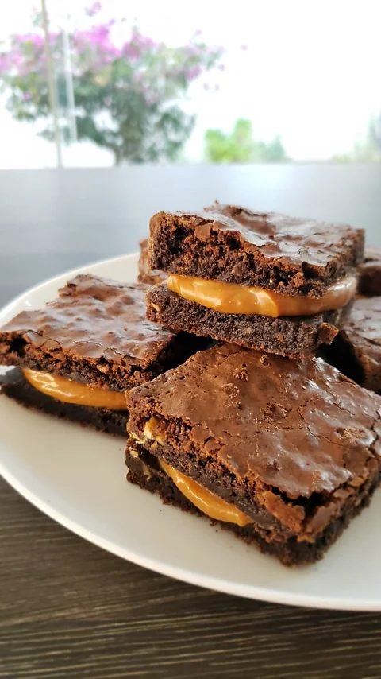

Ingredientes:
5 colheres de manteiga
3 ovos
3 xicara de achocolatado
6 colheres de açúcar
12 colheres de farinha de trigo
Modo de Preparo:
Derreta a manteiga e reserve
Enquanto derrete a manteiga, misture os 3 ovos e a açúcar e misture bem
Acrescente a manteiga derretida no ovo e o açúcar
Agora é so misturar o achocolatado e o trigo
Unte uma forma com manteiga e achocolatado
Leve ao forno a 180° C por 30 minutos
Fácil e Prático